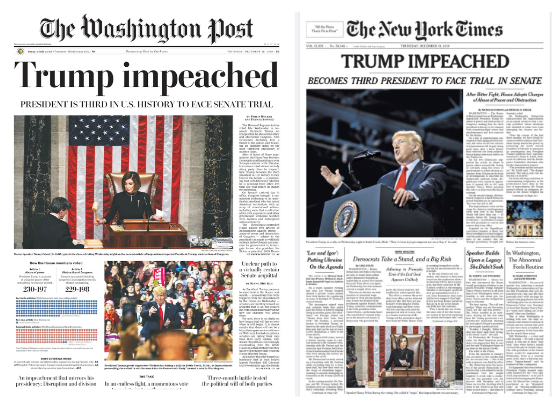
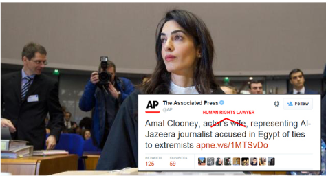

Understanding Media Bias
Let's watch this video about Media Bias.
What is a bias?
- Bias is a positive or negative attitude towards something, based on preconceived prejudices and viewpoints rather than evidence.
- Supporting or opposing something or someone in an unfair way, regardless of the evidence.
Prejudice
- An assumption is made about someone or something before having adequate and accurate knowledge about it.
Bias and Prejudice
- Biases can be a result of prejudice.
- On the other hand, reading biased information can result in someone being prejudiced!
- A cycle of bad judgment and discrimination!
REVIEW
- The media contains messages that can shape our opinions and beliefs of the world around us.
- This can have both social and political implications!
|
Participate in the Discussion Forum: Why do you think it is essential to know the media’s biases, with a focus on news sources? |
|
News Sources & Bias
Participate in the Discussion Forum: What choices can writers, editors, producers, newscasters, and so on make that can create ‘biased’ takes on their reporting? |

How to Detect Bias in the News: Types of Bias
Accordion
Clearing things up
All news stories are influenced by the attitudes and behaviours of those presenting them.
Bias through Selection and Omission
- When journalists decide what and what not to report
- Information based on what journalists deem as ‘relevant.’
Example:

When someone is booed during a speech, a journalist can report deeply about the boos---why was a person booed? What were they saying?
- In contrast, a different journalist can ignore these boos by saying “a handful of dissents.”
Participate in the Discussion Forum: What challenges will you face in detecting Bias Through Selection and Omission?
Bias through Placement
- Which information journalists should highlight first, and how they present it
- Journalists follow a specific way of reporting: the inverted pyramid.

Journalists, by deciding what news goes on the front page, what news is mentioned in the middle, and what issues are discussed last, affect audiences.

“Readers tend to assume these [front page articles] are the most important stories of the day, even if that is not stated.” (The Canadian Encyclopedia, 2018)
Participate in the Discussion Forum: Are you guilty of reading a headline and not the entire article? If yes, why did you do it?
Bias by Headline
- Headlines can suggest the news is good or bad, exciting or scary, in a way the story might not do.
- Articles with Clickbait!
See what makes a headline! Play Mission 1 of Reality Check!
Bias by Word Choice and Tone
- The use of language can influence how readers interpret the news.
- Use of words with ‘positive’ and ‘negative’ connotations
- For example, a team ‘loses’ a game; a team finishes a ‘close game’; or has a ‘near-win’!
Bias by Photo, Captions, and Camera Angles
- Journalists can choose a photo that makes a person look dignified, or angry, and more.
- This influences h

Participate in the Discussion Forum: What is the difference between these two headlines?
ow people read the story!
Bias through Use of Names and Titles
The media uses labels to describe people, which can be spun in a number of ways!

Other examples include: “ex-convict”/”served time 20 years ago for a minor offence
Participate in the Chat: What is a more positive spin? Calling someone a ‘terrorist’ or ‘Freedom Fighter’?
Bias through Statistics and Crowd Counts
- Numbers can be inflated!
- Example: 900 people attended the event / Fewer than 1000 people participated in the event
Bias by Source Control
- Where does the news come from? Who is the reporter? The eyewitness? The government official interviewed?
- Is it merely a public relations piece? Is it to make a company sound good?